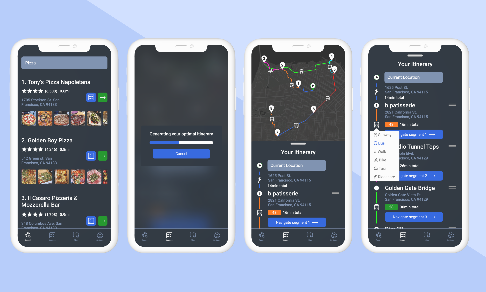
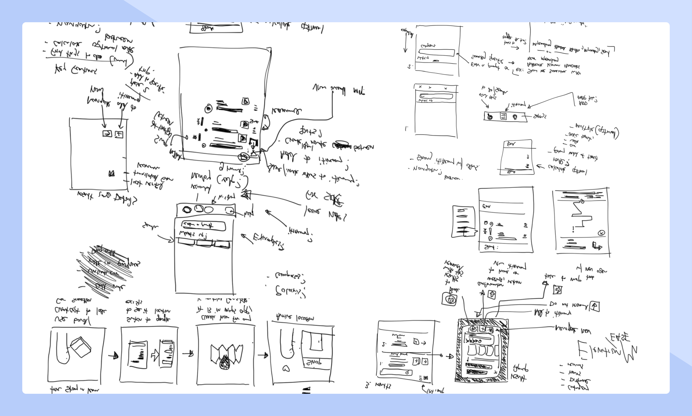
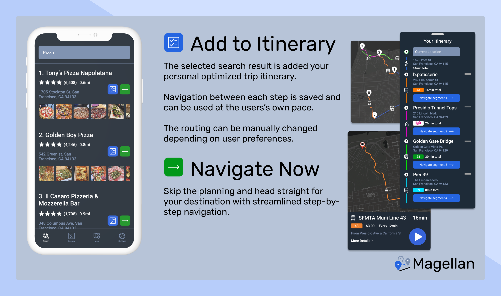

Magellan
Timeframe
1 week
This was a passion project I created after a family trip to asia. The goal was to solve for the problem of missing a method of quickly and easy navigation and intinerary planning.

Magellan is a travel tool that generated an efficiently optimized trip itinerary based on points of interests and user inputs.
During a recent trip to Taiwan and Korea, my family and I found ourselves juggling multiple services and apps when trying to plan our free days. This included google maps, ChatGPT, Yelp, and a few localized navigation and transit apps.
Constantly switching apps was a huge pain, and I saw this as a design opportunity.
I started sketching a solution during the 14 hour return flight.

While Google Maps has multi-stop functionality, it is optimized for a journey in which a users already knows all of their stops.If a users is unsure or still deciding, they have to disrupt the flow and start over to individually research a point of interest.
Being a passion project I have no real-life statistics to or results to share besides my peers and family agreeing this would indeed be a helpful product.
